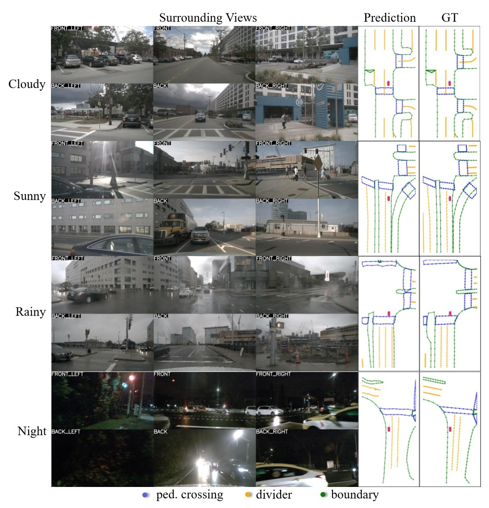
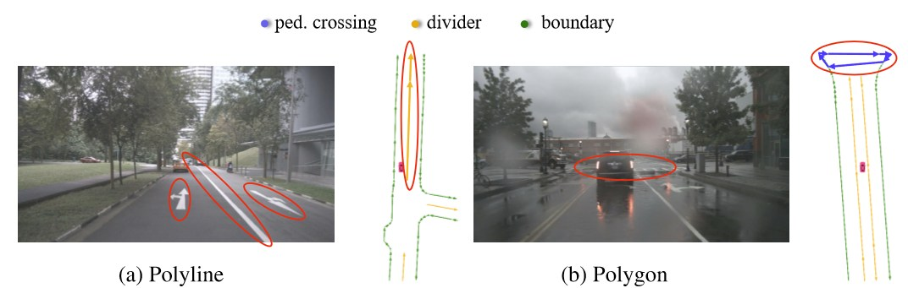
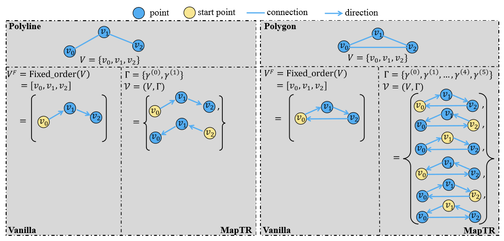
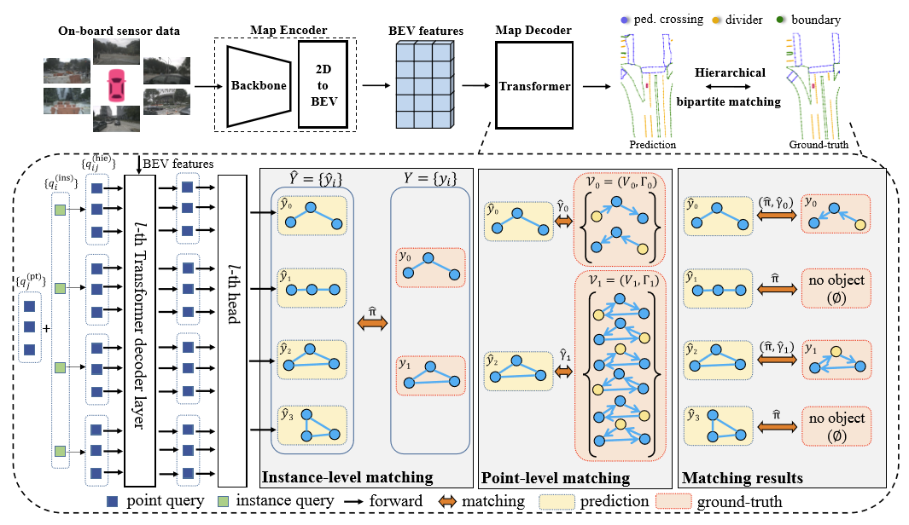
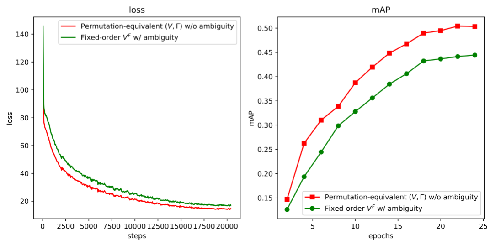
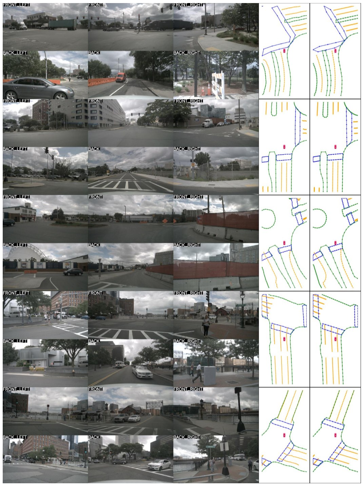
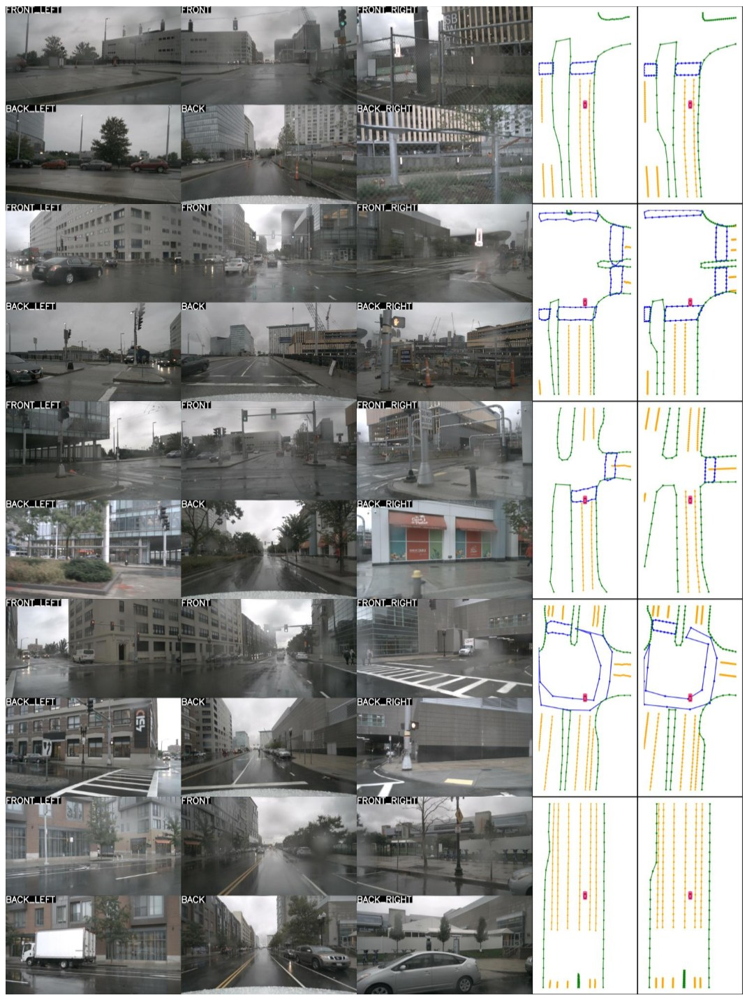
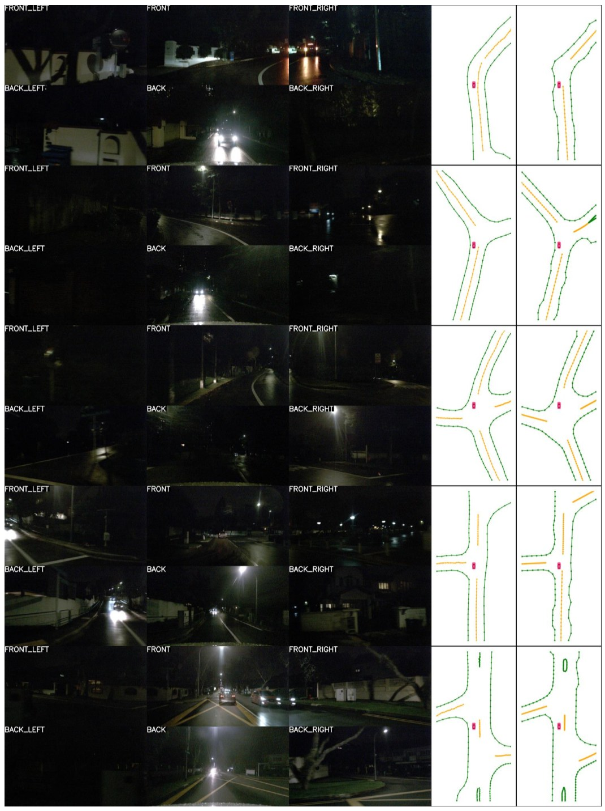

Bencheng Liao1,2,3*、Shaoyu Chen2,3*、Xinggang Wang2†、Tianheng Cheng2,3、Qian Zhang3、Wenyu Liu2、Chang Huang3
1 Institute of Artificial Intelligence, Huazhong University of Science & Technology
2 School of EIC, Huazhong University of Science & Technology
3 Horizon Robotics
{bcliao,shaoyuchen,xgwang,thch,liuwy}@hust.edu.cn {qian01.zhang, chang.huang}@horizon.ai
arXiv:2208.14437v2 [cs.CV]、2023年1月30日（ICLR 2023 会議論文）
翻訳について：原文 PDF は
12_MapTR_2208.14437.pdf（全 18 ページ）。本文、図の説明、図中ラベル、表、脚注、付録を訳出し、論文タイトルと参考文献は原文のまま掲載。図は原図を掲載し、英語ラベルの日本語訳を併記した。数式・数値・引用番号・コードの識別子は原文を維持。原文の記述に関する補足は「訳注」と明示し、本文と区別している。
高精細（HD）地図は、走行シーンに関する豊富かつ精密な環境情報を提供し、自動運転システムにおける計画（プランニング）のための基礎的で不可欠な構成要素である。本論文では、効率的なオンラインのベクトル化 HD マップ構築のための構造化されたエンドツーエンド Transformer である MapTR を提案する。我々は統一的な置換等価（permutation-equivalent）モデリング手法、すなわち地図要素を等価な置換の群を伴う点集合としてモデル化する手法を提案する。これは地図要素の形状を正確に記述し、学習過程を安定化させる。さらに、構造化された地図情報を柔軟に符号化する階層的クエリ埋め込み方式を設計し、地図要素の学習のために階層的二部マッチングを行う。MapTR は、nuScenes データセットにおいて、既存のベクトル化地図構築手法の中でカメラ入力のみで最良の性能と効率を達成する。特に MapTR-nano は RTX 3090 上でリアルタイムの推論速度（25.1 FPS）で動作し、既存の最先端カメラベース手法より 8 倍高速でありながら mAP が 5.0 高い。既存の最先端マルチモダリティ手法と比べても、MapTR-nano は mAP が 0.7 高く、MapTR-tiny は mAP が 13.5 高いうえ推論速度が 3 倍速い。豊富な定性的結果は、MapTR が複雑で多様な走行シーンにおいて安定かつ頑健な地図構築品質を維持することを示している。MapTR は自動運転において大きな応用価値を持つ。コードと追加のデモは https://github.com/hustvl/MapTR で公開している。
（訳注：原文の著者名には記号 * と † が付されているが、その説明の脚注は原文 PDF 上に見当たらない。）
高精細（HD）地図は、自動運転のために特別に設計された高精度の地図であり、地図要素（横断歩道、車線区分線、道路境界など）のインスタンスレベルのベクトル化表現から構成される。HD 地図は道路トポロジーや交通規則に関する豊富な意味情報を含み、これは自動運転車のナビゲーションにとって極めて重要である。
従来、HD 地図は SLAM ベースの手法（Zhang & Singh, 2014; Shan & Englot, 2018; Shan et al., 2020）によってオフラインで構築されており、複雑なパイプラインと高い維持コストを伴っていた。近年、オンライン HD マップ構築がますます関心を集めている。これは車載センサーを用いて実行時に自車両の周囲の地図を構築するものであり、オフラインでの人手作業を不要にする。
初期の研究（Chen et al., 2022a; Liu et al., 2021a; Can et al., 2021）は、前方視画像に基づいて開いた形状の車線を知覚するために線形状の事前知識を利用する。これらは単一視点の知覚に限定されており、任意の形状を持つ他の地図要素には対応できない。鳥瞰図（BEV）表現学習の発展に伴い、最近の研究（Chen et al., 2022b; Zhou & Krähenbühl, 2022; Hu et al., 2021; Li et al., 2022c）は BEV セマンティックセグメンテーションを行うことでラスタ化された地図を予測する。しかし、ラスタ化された地図には、車線構造のようなベクトル化されたインスタンスレベルの情報が欠けており、これは下流タスク（例えば動き予測や計画）にとって重要である。ベクトル化 HD 地図を構築するために、HDMapNet（Li et al., 2022a）はピクセル単位のセグメンテーション結果をグループ化するが、これには複雑で時間のかかる後処理が必要となる。VectorMapNet（Liu et al., 2022a）は各地図要素を点列として表現する。これはカスケード型の粗から密への（coarse-to-fine）フレームワークを採用し、自己回帰デコーダを用いて点を逐次的に予測するため、推論時間が長くなる。

図1：MapTR は、複雑で多様な走行シーンにおいて、安定かつ頑健なベクトル化 HD マップ構築品質を維持する。
図中ラベル：Surrounding Views＝周囲視点画像、Prediction＝予測、GT＝正解（グラウンドトゥルース）、Cloudy＝曇り、Sunny＝晴れ、Rainy＝雨、Night＝夜間、FRONT_LEFT／FRONT／FRONT_RIGHT＝左前方／前方／右前方カメラ、BACK_LEFT／BACK／BACK_RIGHT＝左後方／後方／右後方カメラ、ped. crossing＝横断歩道、divider＝車線区分線、boundary＝道路境界
現在のオンラインのベクトル化 HD マップ構築手法は効率によって制約されており、リアルタイムのシナリオには適用できない。近年、DETR（Carion et al., 2020）は単純かつ効率的なエンコーダ・デコーダ型 Transformer アーキテクチャを採用し、エンドツーエンドの物体検出を実現した。
そこで自然に次の問いが生じる。効率的なエンドツーエンドのベクトル化 HD マップ構築のために、DETR のようなパラダイムを設計できるだろうか？ 我々は、提案する Map TRansformer（MapTR）によって、その答えが肯定的であることを示す。
物体をバウンディングボックスとして容易に幾何学的に抽象化できる物体検出とは異なり、ベクトル化された地図要素はより動的な形状を持つ。地図要素を正確に記述するために、我々は新しい統一的モデリング手法を提案する。各地図要素を、等価な置換の群を伴う点集合としてモデル化する。点集合は地図要素の位置を決定する。そして置換群は、同一の幾何形状に対応する点集合のあらゆる可能な並び順を含んでおり、形状の曖昧さを回避する。
この置換等価なモデリングに基づき、我々は車載カメラの画像を入力としてベクトル化 HD 地図を出力する構造化フレームワークを設計する。我々はオンラインのベクトル化 HD マップ構築を並列回帰問題として簡潔に定式化する。インスタンスレベルと点レベルの情報を柔軟に符号化するために、階層的クエリ埋め込みを提案する。すべてのインスタンスと、各インスタンスのすべての点が、統一的な Transformer 構造によって同時に予測される。さらに学習パイプラインは階層的な集合予測タスクとして定式化され、インスタンスと点を順に割り当てるために階層的二部マッチングを行う。そして、提案する point2point 損失とエッジ方向損失により、点とエッジの両レベルで幾何形状を教師付けする。
これらすべての提案設計により、統一的なモデリングとアーキテクチャを備えた、効率的なエンドツーエンドのオンラインベクトル化 HD マップ構築手法 MapTR を提示する。MapTR は nuScenes（Caesar et al., 2020）データセットにおいて、既存のベクトル化地図構築手法の中で最良の性能と効率を達成する。特に MapTR-nano は RTX 3090 上でリアルタイムの推論速度（25.1 FPS）で動作し、既存の最先端カメラベース手法より 8 倍高速でありながら mAP が 5.0 高い。既存の最先端マルチモダリティ手法と比べても、MapTR-nano は mAP が 0.7 高く推論速度が 8 倍速く、MapTR-tiny は mAP が 13.5 高く推論速度が 3 倍速い。可視化（図1）が示すように、MapTR は複雑で多様な走行シーンにおいて安定かつ頑健な地図構築品質を維持する。
我々の貢献は以下のようにまとめられる。
HD マップ構築。近年、2D から BEV への変換手法（Ma et al., 2022）の発展に伴い、HD マップ構築は車載カメラで撮影された周囲視点画像データに基づくセグメンテーション問題として定式化されている。Chen et al.（2022b）; Zhou & Krähenbühl（2022）; Hu et al.（2021）; Li et al.（2022c）; Philion & Fidler（2020）; Liu et al.（2022b）は、BEV セマンティックセグメンテーションを行うことでラスタ化された地図を生成する。ベクトル化 HD 地図を構築するために、HDMapNet（Li et al., 2022a）はピクセル単位のセマンティックセグメンテーション結果を、ヒューリスティックで時間のかかる後処理によってグループ化し、インスタンスを生成する。VectorMapNet（Liu et al., 2022a）は最初のエンドツーエンドフレームワークであり、2 段階の粗から密へのフレームワークを採用し、自己回帰デコーダを用いて点を逐次的に予測するため、推論時間が長くなり、また置換に関する曖昧さが生じる。VectorMapNet とは異なり、MapTR は地図要素のための新しく統一的なモデリングを導入し、曖昧さを解消して学習過程を安定化させる。さらに MapTR は、はるかに効率の高い構造化された並列の 1 段階フレームワークを構築する。
車線検出。車線検出は HD マップ構築のサブタスクとみなすことができ、道路シーンにおける車線要素の検出に焦点を当てる。車線検出のデータセットの大半は単一視点のアノテーションのみを提供し、開いた形状の要素に焦点を当てているため、関連手法は単一視点に限定されている。LaneATT（Tabelini et al., 2021）はアンカーベースの深層車線検出モデルを用いて、精度と効率の良好なトレードオフを達成する。LSTR（Liu et al., 2021a）は Transformer アーキテクチャを採用して、車線形状モデルのパラメータを直接出力する。GANet（Wang et al., 2022）は車線検出をキーポイント推定と対応付けの問題として定式化し、ボトムアップの設計をとる。Feng et al.（2022）は車線検出のためのパラメトリックなベジェ曲線ベースの手法を提案する。2D 画像座標で車線を検出する代わりに、Garnett et al.（2019）は BEV で 3D 車線検出を行う 3D-LaneNet を提案する。STSU（Can et al., 2021）は車線を BEV 座標における有向グラフとして表現し、曲線ベースのベジェ手法を採用して単眼カメラ画像から車線を予測する。Persformer（Chen et al., 2022a）はより良い BEV 特徴表現を提供し、アンカー設計を最適化して 2D と 3D の車線検出を同時に統一する。限られた単一視点で車線のみを検出するのではなく、MapTR は統一的なモデリングと学習のフレームワークにより、水平 360° の視野（FOV）にわたるさまざまな種類の地図要素を知覚できる。

図2：地図要素の始点と方向に関する曖昧さを示す典型的な事例。(a) ポリライン：対向する 2 車線の間の車線区分線については、その方向を定義することが難しい。車線区分線の両端点のどちらも始点とみなすことができ、点集合は 2 方向に並べることができる。(b) ポリゴン：横断歩道については、ポリゴンの各点のどれもが始点とみなせ、ポリゴンは互いに逆の 2 方向（反時計回りと時計回り）に接続できる。
図中ラベル：ped. crossing＝横断歩道、divider＝車線区分線、boundary＝道路境界、Polyline＝ポリライン（折れ線）、Polygon＝ポリゴン（多角形）
輪郭ベースのインスタンスセグメンテーション。MapTR に関連するもう一つの研究の系統は、輪郭ベースの 2D インスタンスセグメンテーション（Zhu et al., 2022; Xie et al., 2020; Xu et al., 2019; Liu et al., 2021c）である。これらの手法は 2D インスタンスセグメンテーションを物体輪郭の予測タスクとして再定式化し、輪郭頂点の画像座標を推定する。CurveGCN（Ling et al., 2019）はグラフ畳み込みネットワーク（Graph Convolution Networks）を用いて多角形の境界を予測する。Lazarow et al.（2022）; Liang et al.（2020）; Li et al.（2021）; Peng et al.（2020）は中間表現に依存し、2 段階のパラダイム、すなわち第 1 段階でセグメンテーション／検出を行って頂点を生成し、第 2 段階で頂点をポリゴンに変換する方式を採用する。これらの研究は 2D インスタンスマスクの輪郭をポリゴンとしてモデル化する。それらのモデリング手法は線形状の地図要素に対応できず、地図構築には適用できない。これに対し、MapTR は HD マップ構築に特化して設計されており、さまざまな種類の地図要素を統一的な方法でモデル化する。加えて、MapTR は中間表現に依存せず、効率的でコンパクトなパイプラインを持つ。
MapTR は、HD 地図を統一的な方法でモデル化し学習することを目指す。HD 地図は、横断歩道、車線区分線、道路境界などを含む、ベクトル化された静的地図要素の集まりである。構造化されたモデリングのために、MapTR は地図要素を閉じた形状（横断歩道のようなもの）と開いた形状（車線区分線のようなもの）として幾何学的に抽象化する。形状の境界に沿って点を逐次的にサンプリングすることで、閉じた形状の要素はポリゴンに、開いた形状の要素はポリラインに離散化される。
まず、ポリゴンとポリラインはどちらも順序付き点集合 \( V^F = [v_0, v_1, \ldots, v_{N_v-1}] \) として表すことができる（図3（Vanilla）を参照）。\( N_v \) は点の数を表す。しかし、点集合の置換（並び順）は明示的に定義されておらず、一意でもない。ポリゴンとポリラインには多くの等価な置換が存在する。例えば図2 (a) に示すように、対向する 2 車線の間の車線区分線（ポリライン）については、その方向を定義することが難しい。車線区分線の両端点のどちらも始点とみなすことができ、点集合は 2 方向に並べることができる。図2 (b) では、横断歩道（ポリゴン）について、点集合を互いに逆の 2 方向（反時計回りと時計回り）に並べることができる。また、点集合の置換を巡回的に変更しても、ポリゴンの幾何形状には何の影響もない。点集合に固定の置換を教師として課すことは合理的ではない。課された固定の置換は他の等価な置換と矛盾し、学習過程を妨げる。
このギャップを埋めるために、MapTR は各地図要素を \( \mathcal{V} = (V, \Gamma) \) でモデル化する。\( V = \{v_j\}_{j=0}^{N_v-1} \) は地図要素の点集合を表す（\( N_v \) は点の数）。\( \Gamma = \{\gamma^k\} \) は点集合 \( V \) の等価な置換の群を表し、あらゆる可能な並び順を網羅する。

図3：MapTR の置換等価モデリングの説明図。地図要素は幾何学的に抽象化され、ポリラインとポリゴンに離散化される。MapTR は各地図要素を \( (V, \Gamma) \)（点集合 \( V \) と等価な置換の群 \( \Gamma \)）でモデル化することにより、曖昧さを回避し、学習過程を安定化させる。
図中ラベル：point＝点、start point＝始点、connection＝接続、direction＝方向、Polyline＝ポリライン、Polygon＝ポリゴン、Fixed_order＝固定順序、Vanilla＝素朴な手法（固定順序によるモデリング）
具体的には、ポリライン要素（図3（左）を参照）について、\( \Gamma \) は 2 種類の等価な置換を含む。
\[ \Gamma_{\text{polyline}} = \{\gamma^0, \gamma^1\} \begin{cases} \gamma^0(j) = j \mod N_v, \\ \gamma^1(j) = (N_v - 1) - j \mod N_v. \end{cases} \tag{1} \]
ポリゴン要素（図3（右）を参照）について、\( \Gamma \) は \( 2 \times N_v \) 種類の等価な置換を含む。
\[ \Gamma_{\text{polygon}} = \{\gamma^0, \ldots, \gamma^{2\times N_v - 1}\} \begin{cases} \gamma^0(j) = j \mod N_v, \\ \gamma^1(j) = (N_v - 1) - j \mod N_v, \\ \gamma^2(j) = (j+1) \mod N_v, \\ \gamma^3(j) = (N_v - 1) - (j+1) \mod N_v, \\ \ldots \\ \gamma^{2\times N_v - 2}(j) = (j + N_v - 1) \mod N_v, \\ \gamma^{2\times N_v - 1}(j) = (N_v - 1) - (j + N_v - 1) \mod N_v. \end{cases} \tag{2} \]
等価な置換という概念を導入することで、MapTR は地図要素を統一的な方法でモデル化し、曖昧さの問題に対処する。MapTR はさらに、地図要素の学習のために階層的二部マッチング（3.2 節と 3.3 節を参照）を導入し、地図要素を効率的に予測するための構造化されたエンコーダ・デコーダ型 Transformer アーキテクチャを設計する（3.4 節を参照）。
MapTR は、DETR のエンドツーエンドのパラダイム（Carion et al., 2020; Fang et al., 2021）に従い、固定サイズ \( N \) 個の地図要素の集合を 1 回のパスで並列に推論する。\( N \) はシーン中の典型的な地図要素の数より大きく設定される。予測された \( N \) 個の地図要素の集合を \( \hat{Y} = \{\hat{y}_i\}_{i=0}^{N-1} \) と表す。正解（GT）地図要素の集合は \( \varnothing \)（物体なし）でパディングされ、サイズ \( N \) の集合 \( Y = \{y_i\}_{i=0}^{N-1} \) となる。\( y_i = (c_i, V_i, \Gamma_i) \) であり、\( c_i \)、\( V_i \)、\( \Gamma_i \) はそれぞれ GT 地図要素 \( y_i \) の目標クラスラベル、点集合、置換群である。\( \hat{y}_i = (\hat{p}_i, \hat{V}_i) \) であり、\( \hat{p}_i \) と \( \hat{V}_i \) はそれぞれ予測された分類スコアと予測された点集合である。構造化された地図要素のモデリングと学習を実現するために、MapTR は階層的二部マッチング、すなわちインスタンスレベルのマッチングと点レベルのマッチングを順に行う方式を導入する。
インスタンスレベルのマッチング。まず、予測された地図要素 \( \{\hat{y}_i\} \) と GT 地図要素 \( \{y_i\} \) の間で、最適なインスタンスレベルのラベル割り当て \( \hat{\pi} \) を求める必要がある。\( \hat{\pi} \) は \( N \) 個の要素の置換（\( \hat{\pi} \in \Pi_N \)）であり、インスタンスレベルのマッチングコストが最小となるものである。
\[ \hat{\pi} = \mathop{\arg\min}_{\pi \in \Pi_N} \sum_{i=0}^{N-1} \mathcal{L}_{\text{ins\_match}}(\hat{y}_{\pi(i)}, y_i). \tag{3} \]
\( \mathcal{L}_{\text{ins\_match}}(\hat{y}_{\pi(i)}, y_i) \) は予測 \( \hat{y}_{\pi(i)} \) と GT \( y_i \) の間のペアごとのマッチングコストであり、地図要素のクラスラベルと点集合の位置の両方を考慮する。
\[ \mathcal{L}_{\text{ins\_match}}(\hat{y}_{\pi(i)}, y_i) = \mathcal{L}_{\text{Focal}}(\hat{p}_{\pi(i)}, c_i) + \mathcal{L}_{\text{position}}(\hat{V}_{\pi(i)}, V_i). \tag{4} \]
\( \mathcal{L}_{\text{Focal}}(\hat{p}_{\pi(i)}, c_i) \) はクラスのマッチングコスト項であり、予測分類スコア \( \hat{p}_{\pi(i)} \) と目標クラスラベル \( c_i \) の間の Focal Loss（Lin et al., 2017）として定義される。\( \mathcal{L}_{\text{position}}(\hat{V}_{\pi(i)}, V_i) \) は位置のマッチングコスト項であり、予測点集合 \( \hat{V}_{\pi(i)} \) と GT 点集合 \( V_i \) の間の位置の相関を反映する（詳細は付録 B 節を参照）。DETR に従い、最適なインスタンスレベルの割り当て \( \hat{\pi} \) を求めるためにハンガリアン法を用いる。
点レベルのマッチング。インスタンスレベルのマッチングの後、各予測地図要素 \( \hat{y}_{\hat{\pi}(i)} \) には GT 地図要素 \( y_i \) が割り当てられる。次に、正のラベル（\( c_i \neq \varnothing \)）が割り当てられた各予測インスタンスについて、予測点集合 \( \hat{V}_{\hat{\pi}(i)} \) と GT 点集合 \( V_i \) の間の最適な point2point 割り当て \( \hat{\gamma} \in \Gamma \) を求めるために点レベルのマッチングを行う。\( \hat{\gamma} \) はあらかじめ定義された置換群 \( \Gamma \) の中から、点レベルのマッチングコストが最小となるものとして選ばれる。
\[ \hat{\gamma} = \mathop{\arg\min}_{\gamma \in \Gamma} \sum_{j=0}^{N_v-1} D_{\text{Manhattan}}(\hat{v}_j, v_{\gamma(j)}). \tag{5} \]
\( D_{\text{Manhattan}}(\hat{v}_j, v_{\gamma(j)}) \) は、予測点集合 \( \hat{V} \) の \( j \) 番目の点と GT 点集合 \( V \) の \( \gamma(j) \) 番目の点の間のマンハッタン距離である。
MapTR は、最適なインスタンスレベルおよび点レベルの割り当て（\( \hat{\pi} \) と \( \{\hat{\gamma}_i\} \)）に基づいて学習される。損失関数は 3 つの部分、すなわち分類損失、point2point 損失、エッジ方向損失から構成される。
\[ \mathcal{L} = \lambda \mathcal{L}_{\text{cls}} + \alpha \mathcal{L}_{\text{p2p}} + \beta \mathcal{L}_{\text{dir}}, \tag{6} \]
ここで \( \lambda \)、\( \alpha \)、\( \beta \) は異なる損失項のバランスをとるための重みである。
分類損失。インスタンスレベルの最適マッチング結果 \( \hat{\pi} \) により、各予測地図要素にはクラスラベルが割り当てられる。分類損失は Focal Loss 項として次のように定式化される。
\[ \mathcal{L}_{\text{cls}} = \sum_{i=0}^{N-1} \mathcal{L}_{\text{Focal}}(\hat{p}_{\hat{\pi}(i)}, c_i). \tag{7} \]
Point2point 損失。Point2point 損失は、予測された各点の位置を教師付けする。インデックス \( i \) の各 GT インスタンスについて、点レベルの最適マッチング結果 \( \hat{\gamma}_i \) に従い、各予測点 \( \hat{v}_{\hat{\pi}(i),j} \) には GT 点 \( v_{i,\hat{\gamma}_i(j)} \) が割り当てられる。point2point 損失は、割り当てられた各点ペアの間で計算されるマンハッタン距離として定義される。
\[ \mathcal{L}_{\text{p2p}} = \sum_{i=0}^{N-1} \mathbb{1}_{\{c_i \neq \varnothing\}} \sum_{j=0}^{N_v-1} D_{\text{Manhattan}}(\hat{v}_{\hat{\pi}(i),j}, v_{i,\hat{\gamma}_i(j)}). \tag{8} \]
エッジ方向損失。Point2point 損失はポリラインとポリゴンの節点のみを教師付けし、エッジ（隣接する点同士を結ぶ線分）を考慮しない。地図要素を正確に表現するためには、エッジの方向が重要である。そこで我々はさらに、より高いエッジレベルで幾何形状を教師付けするエッジ方向損失を設計する。具体的には、対になった予測エッジ \( \hat{\boldsymbol{e}}_{\hat{\pi}(i),j} \) と GT エッジ \( \boldsymbol{e}_{i,\hat{\gamma}_i(j)} \) のコサイン類似度を考える。
\[ \begin{aligned} \mathcal{L}_{\text{dir}} &= -\sum_{i=0}^{N-1} \mathbb{1}_{\{c_i \neq \varnothing\}} \sum_{j=0}^{N_v-1} \text{cosine\_similarity}(\hat{\boldsymbol{e}}_{\hat{\pi}(i),j}, \boldsymbol{e}_{i,\hat{\gamma}_i(j)}), \\ \hat{\boldsymbol{e}}_{\hat{\pi}(i),j} &= \hat{v}_{\hat{\pi}(i),j} - \hat{v}_{\hat{\pi}(i),(j+1)\,\mathrm{mod}\,\mathrm{N_v}}, \\ \boldsymbol{e}_{i,\hat{\gamma}_i(j)} &= v_{i,\hat{\gamma}_i(j)} - v_{i,\hat{\gamma}_i(j+1)\,\mathrm{mod}\,\mathrm{N_v}}. \end{aligned} \tag{9} \]

図4：MapTR の全体アーキテクチャ。MapTR はエンコーダ・デコーダのパラダイムを採用する。地図エンコーダはセンサー入力を統一的な BEV 表現に変換する。地図デコーダは階層的クエリ埋め込み方式を採用して地図要素を明示的に符号化し、置換等価モデリングに基づく階層的マッチングを行う。MapTR は完全にエンドツーエンドである。パイプラインは高度に構造化されており、コンパクトかつ効率的である。
図中ラベル：On-board sensor data＝車載センサーデータ、Map Encoder＝地図エンコーダ、Backbone＝バックボーン、2D to BEV＝2D から BEV への変換、BEV features＝BEV 特徴、Map Decoder＝地図デコーダ、Hierarchical bipartite matching＝階層的二部マッチング、Prediction＝予測、Ground-truth＝正解、l-th Transformer decoder layer＝第 l 層 Transformer デコーダ層、l-th head＝第 l 層ヘッド、Instance-level matching＝インスタンスレベルのマッチング、Point-level matching＝点レベルのマッチング、Matching results＝マッチング結果、no object＝物体なし、point query＝点クエリ、instance query＝インスタンスクエリ、forward＝順伝播、matching＝マッチング、prediction＝予測、ground-truth＝正解、ped. crossing＝横断歩道、divider＝車線区分線、boundary＝道路境界
MapTR はエンコーダ・デコーダのパラダイムを設計する。全体アーキテクチャを図4 に示す。
入力モダリティ。MapTR は車載カメラの周囲視点画像を入力とする。MapTR は他の車載センサー（例えば LiDAR や RADAR）とも互換性がある。MapTR をマルチモダリティデータへ拡張することは単純かつ容易である。そして合理的な置換等価モデリングのおかげで、カメラ入力のみであっても、MapTR はマルチモダリティ入力を用いる他の手法を大きく上回る。
地図エンコーダ。MapTR の地図エンコーダは、複数の車載カメラの画像から特徴を抽出し、それらの特徴を統一的な特徴表現、すなわち BEV 表現に変換する。多視点画像 \( \mathcal{I} = \{I_1, \ldots, I_K\} \) が与えられたとき、従来のバックボーンを用いて多視点特徴マップ \( \mathcal{F} = \{F_1, \ldots, F_K\} \) を生成する。次に 2D 画像特徴 \( \mathcal{F} \) を BEV 特徴 \( \mathcal{B} \in \mathbb{R}^{H \times W \times C} \) に変換する。デフォルトでは、展開の容易さと高い効率を考慮して、基本の 2D から BEV への変換モジュールとして GKT（Chen et al., 2022b）を採用する。MapTR は他の変換手法とも互換性があり、安定した性能を維持する。例えば CVT（Zhou & Krähenbühl, 2022）、LSS（Philion & Fidler, 2020; Liu et al., 2022c; Li et al., 2022b; Huang et al., 2021）、Deformable Attention（Li et al., 2022c; Zhu et al., 2021）、IPM（Mallot et al., 1991）である。アブレーション研究を表4 に示す。
地図デコーダ。各地図要素を明示的に符号化するための階層的クエリ埋め込み方式を提案する。具体的には、インスタンスレベルのクエリの集合 \( \{q_i^{\text{ins}}\}_{i=0}^{N-1} \) と、すべてのインスタンスで共有される点レベルのクエリの集合 \( \{q_j^{\text{pt}}\}_{j=0}^{N_v-1} \) を定義する。各地図要素（インデックス \( i \)）は階層的クエリの集合 \( \{q_{ij}^{\text{hie}}\}_{j=0}^{N_v-1} \) に対応する。\( i \) 番目の地図要素の \( j \) 番目の点の階層的クエリは次のように定式化される。
\[ q_{ij}^{\text{hie}} = q_i^{\text{ins}} + q_j^{\text{pt}}. \tag{10} \]
地図デコーダは、階層的クエリを反復的に更新する、カスケード接続された複数のデコーダ層を含む。各デコーダ層では、マルチヘッド自己注意（MHSA）を採用して、階層的クエリ同士で（インスタンス間とインスタンス内の両方で）情報を交換させる。次に BEVFormer（Li et al., 2022c）に着想を得て、Deformable Attention（Zhu et al., 2021）を採用し、階層的クエリを BEV 特徴と相互作用させる。各クエリ \( q_{ij}^{\text{hie}} \) は参照点 \( p_{ij} \) の 2 次元の正規化 BEV 座標 \( (x_{ij}, y_{ij}) \) を予測する。そして参照点の周囲の BEV 特徴をサンプリングし、クエリを更新する。
地図要素は通常不規則な形状を持ち、長距離の文脈を必要とする。各地図要素は、柔軟かつ動的な分布を持つ参照点の集合 \( \{p_{ij}\}_{j=0}^{N_v-1} \) に対応する。参照点 \( \{p_{ij}\}_{j=0}^{N_v-1} \) は地図要素の任意の形状に適応でき、地図要素の学習のために有益な文脈を捉えることができる。
MapTR の予測ヘッドは単純であり、分類ブランチと点回帰ブランチから構成される。分類ブランチはインスタンスのクラススコアを予測する。点回帰ブランチは点集合 \( \hat{V} \) の位置を予測する。各地図要素について、\( N_v \) 個の点の正規化 BEV 座標を表す \( 2N_v \) 次元のベクトルを出力する。
データセットと評価指標。MapTR を、広く用いられている nuScenes（Caesar et al., 2020）データセットで評価する。このデータセットは、それぞれ約 20 秒の長さの 1000 シーンを含む。キーサンプルは 2Hz でアノテーションされている。各サンプルは 6 台のカメラからの RGB 画像を持ち、自車両の水平 360° の視野をカバーする。先行手法（Li et al., 2022a; Liu et al., 2022a）に従い、公平な評価のために 3 種類の地図要素、すなわち横断歩道、車線区分線、道路境界を選択する。知覚範囲は \( X \) 軸が \( [-15.0m, 15.0m] \)、\( Y \) 軸が \( [-30.0m, 30.0m] \) である。地図構築の品質の評価には平均適合率（AP）を採用する。予測と GT がマッチするか否かの判定には Chamfer 距離 \( D_{Chamfer} \) を用いる。いくつかの \( D_{Chamfer} \) の閾値（\( \tau \in T, T = \{0.5, 1.0, 1.5\} \)）のもとで \( \text{AP}_\tau \) を計算し、全閾値にわたって平均したものを最終的な AP 指標とする。
\[ \text{AP} = \frac{1}{|\mathrm{T}|} \sum_{\tau \in \mathrm{T}} \text{AP}_\tau. \tag{11} \]
実装の詳細。MapTR は 8 基の NVIDIA GeForce RTX 3090 GPU で学習する。AdamW（Loshchilov & Hutter, 2019）オプティマイザとコサインアニーリングのスケジュールを採用する。MapTR-tiny では、バックボーンとして ResNet50（He et al., 2016）を採用する。MapTR-tiny は合計バッチサイズ 32（6 視点の画像を含む）で学習する。すべてのアブレーション研究は、24 エポック学習した MapTR-tiny に基づく。MapTR-nano はリアルタイム用途向けに設計されている。バックボーンとして ResNet18 を採用する。詳細は付録 A に示す。
表1 では、MapTR を最先端手法と比較する。MapTR-nano は RTX 3090 上でリアルタイムの推論速度（25.1 FPS）で動作し、既存の最先端カメラベース手法（VectorMapNet-C）より 8 倍高速でありながら mAP が 5.0 高い。既存の最先端マルチモダリティ手法と比べても、MapTR-nano は mAP が 0.7 高く推論速度が 8 倍速く、MapTR-tiny は mAP が 13.5 高く推論速度が 3 倍速い。MapTR はまた収束の速い手法でもあり、24 エポックのスケジュールで高い性能を示す。
異なる設計の有効性を検証するために、nuScenes の val セットでアブレーション実験を行う。さらなるアブレーション研究は付録 B にある。
置換等価モデリングの有効性。表2 では、提案する置換等価モデリングの有効性を検証するためのアブレーション実験を示す。点集合に一意の置換を課す素朴な（vanilla）モデリング手法と比べて、置換等価モデリングは地図要素の曖昧さを解消し、5.9 mAP の改善をもたらす。横断歩道については改善が 11.9 AP にも達し、ポリゴン要素のモデリングにおける優位性を証明している。また、提案するモデリングによる安定化を示すために、図5 で学習過程を可視化する。
| 手法 | モダリティ | バックボーン | エポック数 | APped | APdivider | APboundary | mAP | FPS |
|---|---|---|---|---|---|---|---|---|
| HDMapNet | C | Effi-B0 | 30 | 14.4 | 21.7 | 33.0 | 23.0 | 0.8 |
| HDMapNet | L | PointPillars | 30 | 10.4 | 24.1 | 37.9 | 24.1 | 1.0 |
| HDMapNet | C & L | Effi-B0 & PointPillars | 30 | 16.3 | 29.6 | 46.7 | 31.0 | 0.5 |
| VectorMapNet | C | R50 | 110 | 36.1 | 47.3 | 39.3 | 40.9 | 2.9 |
| VectorMapNet | L | PointPillars | 110 | 25.7 | 37.6 | 38.6 | 34.0 | - |
| VectorMapNet | C & L | R50 & PointPillars | 110 | 37.6 | 50.5 | 47.5 | 45.2 | - |
| MapTR-nano | C | R18 | 110 | 39.6 | 49.9 | 48.2 | 45.9 | 25.1 |
| MapTR-tiny | C | R50 | 24 | 46.3 | 51.5 | 53.1 | 50.3 | 11.2 |
| MapTR-tiny | C | R50 | 110 | 56.2 | 59.8 | 60.1 | 58.7 | 11.2 |
表1：nuScenes val セットにおける最先端手法（Liu et al., 2022a; Li et al., 2022a）との比較。「C」と「L」はそれぞれカメラと LiDAR を表す。「Effi-B0」と「PointPillars」はそれぞれ Tan & Le（2019）と Lang et al.（2019）に対応する。他の手法の AP は VectorMapNet の論文から引用した。VectorMapNet-C の FPS はその著者らから提供されたもので、RTX 3090 上で計測された。その他の FPS は、RTX 3090 を搭載した同一マシン上で計測した。「-」は対応する結果が得られないことを意味する。カメラ入力のみであっても、MapTR-tiny はマルチモダリティの対抗手法を大きく上回る（+13.5 mAP）。MapTR-nano はカメラベースで SOTA の性能を達成し、25.1 FPS で動作して、リアルタイムのベクトル化地図構築を初めて実現した。
| モデリング手法 | APped | APdivider | APboundary | mAP |
|---|---|---|---|---|
| 固定順序 \( V^F \)（曖昧さあり） | 34.4 | 48.1 | 50.7 | 44.4 |
| 置換等価 \( (V, \Gamma) \)（曖昧さなし） | 46.3 | 51.5 | 53.1 | 50.3 |
表2：モデリング手法に関するアブレーション。素朴なモデリング手法は点集合に一意の置換を課すため、曖昧さが生じる。MapTR は曖昧さを回避するために置換等価モデリングを導入し、これにより学習過程が安定化し、性能が大きく向上する（+5.9 mAP）。（訳注：原表では MapTR の採用設定の行が網掛けで強調されている。表3・表4 も同様。）
| \( \beta \) | APped | APdivider | APboundary | mAP |
|---|---|---|---|---|
| 0 | 41.4 | 51.3 | 51.9 | 48.2 |
| \( 3e^{-3} \) | 44.8 | 50.4 | 52.1 | 49.1 |
| \( 5e^{-3} \) | 46.3 | 51.5 | 53.1 | 50.3 |
| \( 1e^{-2} \) | 41.9 | 50.9 | 52.0 | 48.3 |
表3：エッジ方向損失の重み \( \beta \) に関するアブレーション。
エッジ方向損失の有効性。エッジ方向損失の重みに関するアブレーションを表3 に示す。\( \beta = 0 \) はエッジ方向損失を用いないことを意味する。\( \beta = 5e^{-3} \) が適切な教師付けに相当し、デフォルト設定として採用している。
| 手法 | mAP | FPS | パラメータ数 |
|---|---|---|---|
| IPM | 46.2 | 11.7 | 35.7M |
| LSS | 49.5 | 10.0 | 37.1M |
| Deform. Atten. | 49.7 | 11.2 | 36.0M |
| GKT | 50.3 | 11.2 | 35.9M |
表4：2D から BEV への変換手法に関するアブレーション。MapTR はさまざまな 2D-BEV 変換手法と互換性があり、安定した性能を達成する。
2D から BEV への変換。表4 では、2D から BEV への変換手法（例えば IPM（Mallot et al., 1991）、LSS（Liu et al., 2022c; Philion & Fidler, 2020）、Deformable Attention（Li et al., 2022c）、GKT（Chen et al., 2022b））についてアブレーションを行う。LSS には最適化された実装（Liu et al., 2022c）を用いる。また IPM および LSS との公平な比較のため、GKT と Deformable Attention はいずれも 1 層の構成を採用する。実験により、MapTR がさまざまな 2D-BEV 変換手法と互換性があり、安定した性能を達成することが示される。展開の容易さと高い効率を考慮して、MapTR のデフォルト構成として GKT を採用する。
複雑で多様な走行シーンにおける、予測されたベクトル化 HD 地図の結果を図1 に示す。MapTR は安定した優れた結果を維持している。さらなる定性的結果は付録 C に示す。頑健性を示すための動画も（補足資料として）提供している。
MapTR は、効率的なオンラインのベクトル化 HD マップ構築のための構造化されたエンドツーエンドフレームワークであり、単純なエンコーダ・デコーダ型 Transformer アーキテクチャと階層的二部マッチングを採用して、提案する置換等価モデリングに基づく地図要素の学習を行う。広範な実験により、提案手法が難易度の高い nuScenes データセットにおいて任意形状の地図要素を正確に知覚できることが示された。MapTR が自動運転システムの基本モジュールとして役立ち、下流タスク（例えば動き予測や計画）の発展を後押しすることを期待する。
本研究の一部は NSFC（No. 62276108）の支援を受けた。評価に関する指導と建設的な議論をいただいた Yicheng Liu 氏に感謝する。
参考文献は原文のまま掲載した。
本節では、手法と実験に関するさらなる実装の詳細を示す。
データ拡張。元画像の解像度は \( 1600 \times 900 \) である。MapTR-nano では、元画像を 0.2 倍にリサイズする。MapTR-tiny では、元画像を 0.5 倍にリサイズする。デフォルトでカラージッターを用いる。
モデル設定。すべての実験において、学習時には \( \lambda \) を 2、\( \alpha \) を 5、\( \beta \) を \( 5e^{-3} \) に設定する。MapTR-tiny では、インスタンスレベルのクエリ数と点レベルのクエリ数をそれぞれ 50 と 20 に設定する。また各 BEV グリッドのサイズを \( 0.3m \) とし、6 層の Transformer デコーダ層を積み重ねる。MapTR-tiny は、合計バッチサイズ 32（6 視点の画像を含む）、学習率 \( 6e^{-4} \) で学習し、バックボーンの学習率乗数は 0.1 とする。すべてのアブレーション研究は、24 エポック学習した MapTR-tiny に基づく。MapTR-nano では、インスタンスレベルのクエリ数と点レベルのクエリ数をそれぞれ 100 と 20 に設定する。また各 BEV グリッドのサイズを \( 0.75m \) とし、2 層の Transformer デコーダ層を積み重ねる。MapTR-nano は、110 エポック、合計バッチサイズ 192、学習率 \( 4e^{-3} \) で学習し、バックボーンの学習率乗数は 0.1 とする。MapTR のデフォルトの 2D から BEV へのモジュールとして GKT（Chen et al., 2022b）を用いる。
データセットの前処理。地図アノテーションは Liu et al.（2022a）; Li et al.（2022a）に従って処理する。自車両の知覚範囲内にある地図要素を GT 地図要素として抽出する。デフォルトでは、知覚範囲は \( X \) 軸が \( [-15.0m, 15.0m] \)、\( Y \) 軸が \( [-30.0m, 30.0m] \) である。

図5：置換のモデリング手法ごとの収束曲線。
図中ラベル：loss＝損失、steps＝ステップ数、epochs＝エポック数、Permutation-equivalent (V, Γ) w/o ambiguity＝置換等価 (V, Γ)（曖昧さなし）、Fixed-order VF w/ ambiguity＝固定順序 VF（曖昧さあり）
点の数。各地図要素をモデル化するための点の数に関するアブレーションを表5 に示す。点が少なすぎると、地図要素の複雑な幾何形状を記述できない。点が多すぎると効率に影響する。MapTR のデフォルト設定として 20 点を採用する。
要素の数。地図要素の数に関するアブレーションを表6 に示す。MapTR-tiny の地図要素のデフォルト数として 50 を採用する。
| 点の数 | APped | APdivider | APboundary | mAP | FPS |
|---|---|---|---|---|---|
| 10 | 42.5 | 51.3 | 50.1 | 48.0 | 12.3 |
| 20 | 46.3 | 51.5 | 53.1 | 50.3 | 11.2 |
| 40 | 44.7 | 52.4 | 52.9 | 50.0 | 10.8 |
表5：各地図要素をモデル化するための点の数に関するアブレーション。
| 要素の数 | APped | APdivider | APboundary | mAP | FPS |
|---|---|---|---|---|---|
| 25 | 36.3 | 43.8 | 44.7 | 41.6 | 11.4 |
| 50 | 46.3 | 51.5 | 53.1 | 50.3 | 11.2 |
| 75 | 48.2 | 53.1 | 55.3 | 52.2 | 11.1 |
表6：地図要素の数に関するアブレーション。
デコーダ層の数。地図デコーダの層数に関するアブレーションを表7 に示す。地図構築の性能は層数が増えるにつれて向上するが、層数が 6 に達すると飽和する。
| 層の数 | APped | APdivider | APboundary | mAP | FPS |
|---|---|---|---|---|---|
| 1 | 20.8 | 30.2 | 36.3 | 29.1 | 15.2 |
| 2 | 36.0 | 43.1 | 48.0 | 42.4 | 14.2 |
| 3 | 38.2 | 44.1 | 49.5 | 44.0 | 13.5 |
| 6 | 46.3 | 51.5 | 53.1 | 50.3 | 11.2 |
| 8 | 39.6 | 51.9 | 51.2 | 47.6 | 10.6 |
表7：デコーダの数に関するアブレーション。
位置マッチングコスト。3.2 節で述べたように、インスタンスレベルのマッチングでは、予測点集合 \( \hat{V}_{\pi(i)} \) と GT 点集合 \( V_i \) の間の位置の相関を反映するために、位置マッチングコスト項 \( \mathcal{L}_{\text{position}}(\hat{V}_{\pi(i)}, V_i) \) を採用する。表8 では 2 種類のコスト設計、すなわち Chamfer 距離コストと point2point コストを比較する。Point2point コストは点レベルのマッチングコストと類似している。具体的には、最良の point2point 割り当てを求め、すべての点ペアのマンハッタン距離の総和を 2 つの点集合の位置マッチングコストとする。実験により、point2point コストが Chamfer 距離コストより優れていることが示される。
| 位置マッチングコスト | APped | APdivider | APboundary | mAP |
|---|---|---|---|---|
| Chamfer 距離コスト | 40.3 | 53.8 | 48.5 | 47.5 |
| Point2point コスト | 46.3 | 51.5 | 53.1 | 50.3 |
表8：位置マッチングコスト項に関するアブレーション。
Swin Transformer バックボーン。Swin Transformer バックボーン（Liu et al., 2021b）に関するアブレーションを表9 に示す。
| 手法 | バックボーン | APped | APdivider | APboundary | mAP | FPS | パラメータ数 |
|---|---|---|---|---|---|---|---|
| MapTR-tiny | R50 | 46.3 | 51.5 | 53.1 | 50.3 | 11.2 | 35.9M |
| MapTR-tiny | Swin-tiny | 45.2 | 52.7 | 52.3 | 50.1 | 9.1 | 39.9M |
| MapTR-small | Swin-small | 50.2 | 55.4 | 57.3 | 54.3 | 7.3 | 61.2M |
| MapTR-base | Swin-base | 50.6 | 58.7 | 58.4 | 55.9 | 6.1 | 99.2M |
表9：Swin Transformer バックボーンに関するアブレーション。
モダリティ。マルチセンサー知覚は自動運転車の安全性にとって極めて重要であり、MapTR は LiDAR のような他の車載センサーとも互換性がある。表10 に示すように、わずか 24 エポックのスケジュールで、マルチモダリティの MapTR は従来の最先端の結果を 17.3 mAP も大きく上回り、しかも 2 倍高速である。
| 手法 | モダリティ | エポック数 | APped | APdivider | APboundary | mAP | FPS |
|---|---|---|---|---|---|---|---|
| HDMapNet | C & L | 30 | 16.3 | 29.6 | 46.7 | 31.0 | 0.5 |
| VectorMapNet | C & L | 110 | 37.6 | 50.5 | 47.5 | 45.2 | <2.9 |
| MapTR-tiny | C | 24 | 46.3 | 51.5 | 53.1 | 50.3 | 11.2 |
| MapTR-tiny | L | 24 | 48.5 | 53.7 | 64.7 | 55.6 | 7.2 |
| MapTR-tiny | C & L | 24 | 55.9 | 62.3 | 69.3 | 62.5 | 5.8 |
表10：モダリティに関するアブレーション。
カメラのずれに対する頑健性。実際の応用では、カメラの内部パラメータは通常正確でほとんど変化しないが、カメラの外部パラメータはカメラ位置のずれやキャリブレーション誤差などによって不正確になる可能性がある。頑健性を検証するために、検証セットを走査し、各サンプルに対してランダムにノイズを生成する。異なる程度の並進のずれと回転のずれをそれぞれ加える。ノイズはすべてのカメラとすべての座標に加えることに注意されたい。また、ノイズは正規分布に従う。一部のサンプルには極端に大きなずれが存在し、それが性能に大きく影響する。表11 と表12 に示すように、\( \Delta_x, \Delta_y, \Delta_z \) の標準偏差が \( 0.1m \)、あるいは \( \theta_x, \theta_y, \theta_z \) の標準偏差が \( 0.02rad \) の場合でも、MapTR は同等の性能を維持する。
| 手法 | \( \sigma_1(m) \) | ||||
|---|---|---|---|---|---|
| 0 | 0.05 | 0.1 | 0.5 | 1.0 | |
| MapTR-tiny | 50.3 | 49.9 | 49.0 | 34.0 | 17.0 |
表11：カメラの並進のずれに対する頑健性。評価指標は mAP。\( \sigma_1 \) は \( \Delta_x, \Delta_y, \Delta_z \) の標準偏差である。
| 手法 | \( \sigma_2(rad) \) | ||||
|---|---|---|---|---|---|
| 0 | 0.005 | 0.01 | 0.02 | 0.05 | |
| MapTR-tiny | 50.3 | 49.4 | 47.5 | 42.0 | 24.7 |
表12：カメラの回転のずれに対する頑健性。評価指標は mAP。\( \sigma_2 \) は \( \theta_x, \theta_y, \theta_z \) の標準偏差である。
詳細な実行時間。MapTR の効率についてより深く理解するために、マルチカメラ入力のみを用いる MapTR-tiny における各構成要素の詳細な実行時間を表13 に示す。
| 構成要素 | 実行時間 (ms) | 割合 |
|---|---|---|
| バックボーン | 55.5 | 62.1% |
| 2D から BEV へのモジュール（GKT） | 12.3 | 13.8% |
| 地図デコーダ | 21.5 | 24.1% |
| 合計 | 89.3 | 100 % |
表13：RTX 3090 上での MapTR-tiny の各構成要素の詳細な実行時間。
nuScenes の val セットにおいて、さまざまな気象条件や困難な道路環境のもとでの MapTR の地図構築結果を可視化する。図6、図7、図8 に示すように、MapTR は安定した優れた結果を維持している。動画の結果は補足資料として提供している。

図6：晴天および曇天のもとでの可視化。
図中ラベル：FRONT_LEFT／FRONT／FRONT_RIGHT＝左前方／前方／右前方カメラ、BACK_LEFT／BACK／BACK_RIGHT＝左後方／後方／右後方カメラ。（訳注：図6〜図8 には列見出しがないが、図1 と同じ配置で、右側 2 列はそれぞれ予測と正解（GT）の地図、色は青＝横断歩道、橙＝車線区分線、緑＝道路境界を表すと考えられる。）

図7：雨天のもとでの可視化。

図8：夜間の可視化。